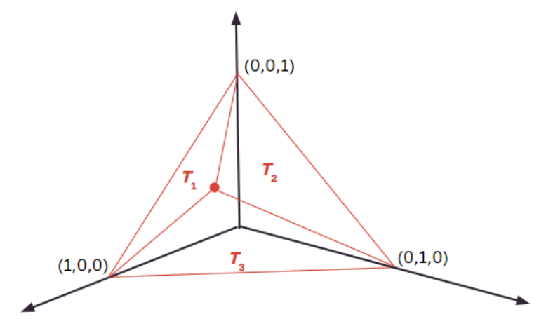

Sperner's Lemma is a combinatorial lemma with an algorithmic proof. The conjecture begins with the definition of a simplex:
An n-simplex is an n-dimensional tetrahedron, where n is an integer. A 0-simplex is a point, a 1-simplex a line, a 2-simplex a triangle, and a 3-simplex is a tetrahedron. We can triangulate an n-simplex by dividing it into smaller n-simplices. The above implementation demonstrates Sperner's Lemma on a 2-simplex. You can input into the text box the number of subdivisions and press the 'Enter' button to triangulate the simplex. The 'faces' of this triangulation make up the boundary of the main triangle, and so are the bottom, right, and left edges. A 'facet' of a triangulated simplex is an (n-1)-simplex that lies on a face on the triangulation. In the demo, the facets are the line segments that are along the boundary of the triangle.
We can color a triangulated n-simplex with n colors such that:
Given an triangulated 2-simplex, we call an line segment a 'door' if it has different colors for each of its end points. Press the 'Find Doors' buttons to highlight these. Along any edge of our triangle, we are guarenteed to have at least one door. This is because the main edge has different colored endpoints, and so there must be a line segment along this edge that 'switches' the color. In fact, there must be an odd number of doors along the edge. If the color was switched twice, when the vertices of the edge would have to have the same color, which we know is not true.
Now, imagine that you are able to enter the simplex by 'walking' through these doors. Once you walk through a door, you are inside a triangle. Consider your options for the color of the third vertex of this triangle. If you have walked through a blue/green door, then if the third vertex of the triangle is blue or green, you have found another door to walk through. You can continue walking thrrough these doors. Eventually, you will either exit out the triangle through another blue/green door on the boundary, or you will walk into a rainbow triangle. If you exit out another blue/green door, then you have eliminated an even number of doors that might lead you to a rainbow triangle. Since you know that there are an odd number of blue/green doors along the boundary, there must be at least one door that leads you to a rainbow triangle!
Before providing details on how Sperner's Lemma applies to Brouwer's Fixed Point Theorem, we must first describe what it means to consider the barycentric coordinates of the triangle. Imaging we take the triangle into a 3 dimensional space and 'lean it' up against the vertical axis so that its vertices lie on the points (1, 0, 0), (0, 1, 0), and (0, 0, 1). 
The (x, y, z) barycentric coordinate is defined to be \(\frac{(area(T_2), area(T_1), area(T_3))}{area(whole triangle)} \). Notice that for all points on our triangle, x + y + z = 1.
Then, for a continuous function \(f: (x, y, z) \rightarrow (x', y', z')\) with our triangle as the domain, Brouwer's fixed point theorem states that there will always be a point at which (x, y, z) = (x', y', z').
To prove this, we need to show that we will always be able to find such a point. First, subdivide the barycentric triangle. Then, color it as follows: